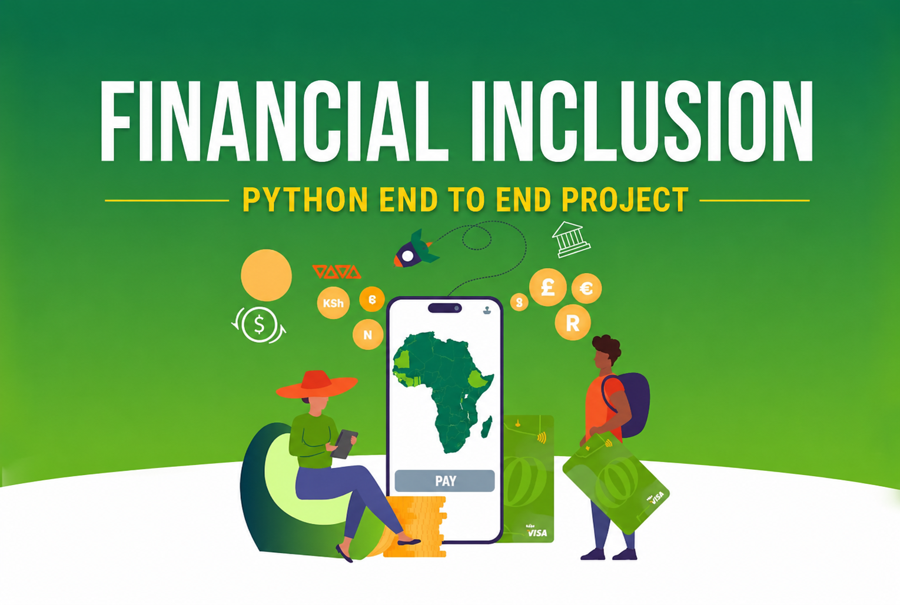

Project 1
Financial Inclusion Analysis
This project explores financial inclusion across East African countries using Python. It covers the complete data analysis workflow, including data collection, data cleaning, and exploratory data analysis (EDA) to understand patterns and trends in access to financial services. The project provides valuable insights into financial inclusion across the region and highlights key socioeconomic factors associated with financial access.
Python
Pandas
Matplotlib
Seaborn